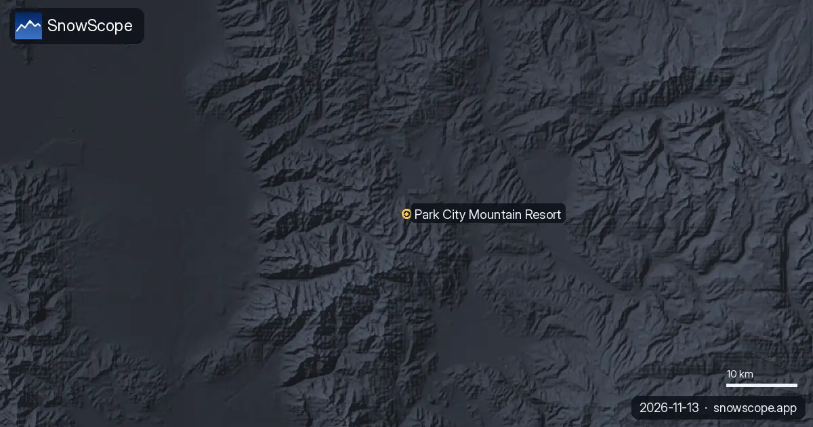
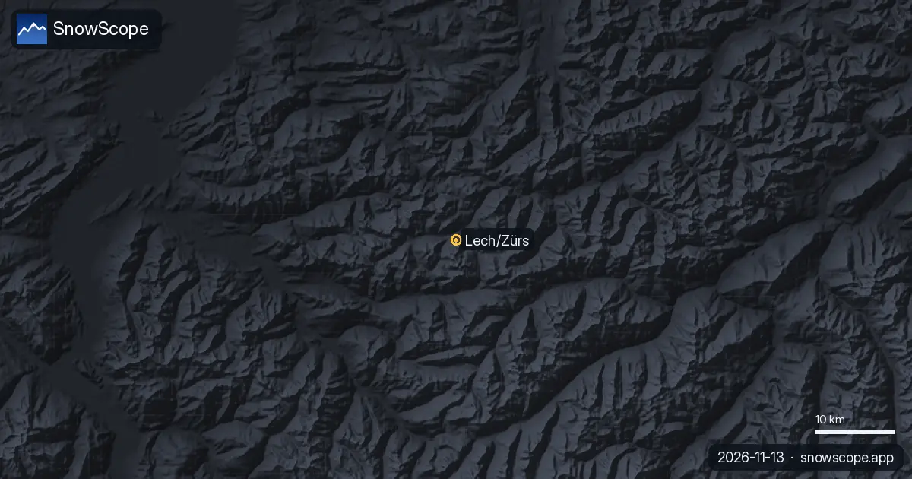
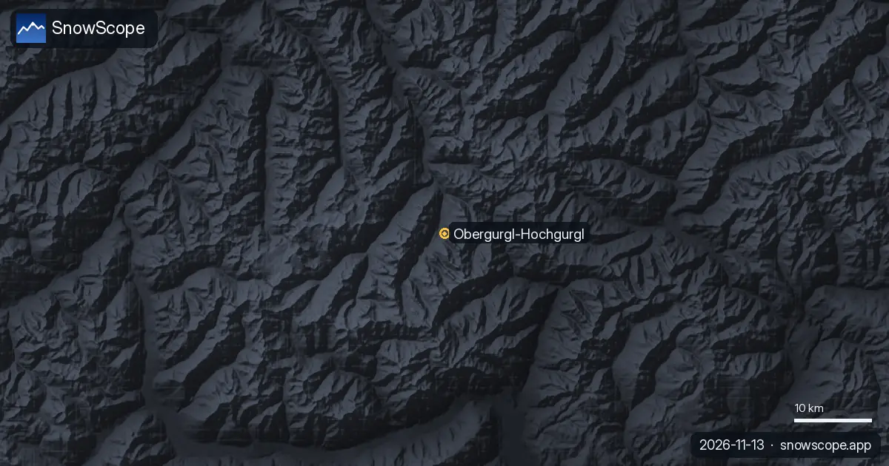
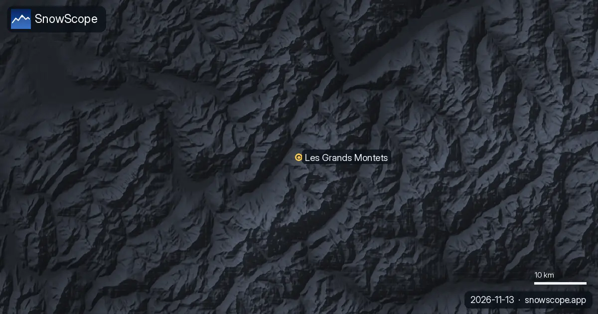
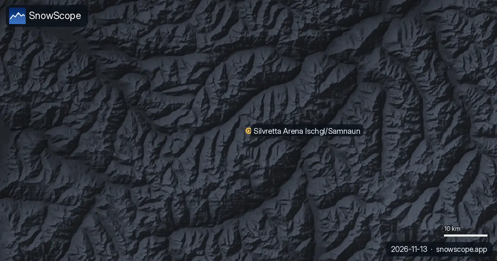
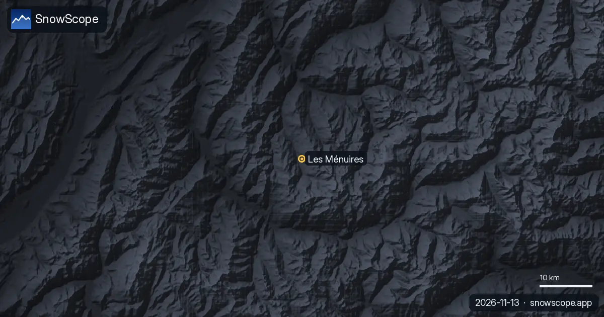

Bollettini neve · Previsioni neve
Bollettini neve quotidiani per sciatori: dove c'è neve, cosa arriva e dove sciare, dalla mappa neve di SnowScope e dalle stazioni di misura. Ogni numero viene dai dati del giorno.

Condizioni per sciare a Deer Valley il 13 novembre 2026: ancora nessuna vera neve al suolo, circa 4 in vicino alla vetta con la perturbazione del weekend, pioggia sul lato basso dell'East Village sotto circa 6,700-7,600 ft e 11 in in alto nella settimana.

Da oggi al 16 novembre ci aspettiamo 13 in (34 cm) a Bear Valley, 13 in (34 cm) a Dodge Ridge e 13 in (33 cm) a Badger Pass. Una parola sui numeri: i …

Previsione delle nevicate a Park City (Utah) il 13 novembre 2026: per ora quasi niente neve al suolo, circa 5 in vicino alla vetta con la perturbazione del weekend e limite delle nevicate a 7,400-7,700 ft, pioggia alla base e circa 12 in in alto nella settimana.

Previsioni neve ad Alpental il 13 novembre 2026: circa 1 in sulla parte alta, pioggia quasi fino in vetta nel weekend con il limite verso 5,400-5,600 ft, poi 4-5 in di pioggia e neve miste in alto la prossima settimana.

Punto neve a Bogus Basin per chi scia da Boise il 13 novembre 2026: ancora niente neve al suolo, pioggia e neve bagnata nel weekend con il limite verso 6,300-6,800 ft, poi aria più fredda e circa 8 in in vetta entro la prossima settimana.

La mappa delle piste di Sillian (Hochpustertal) con il nostro strato di neve il 13 novembre 2026: 8,6 cm in vetta a 2399 m, pendii bassi scoperti e una settimana di pioggia e neve miste con il limite verso 1.800-2.000 m.

Revelstoke, previsioni neve: fino a 10–21 cm attesi entro il 16 novembre (Canada occidentale). A Whistler Blackcomb lo zero termico sale tra 1.500 m …

Condizioni della neve a Silvretta Montafon il 13 novembre 2026: 4,5 cm in vetta a 2421 m, metà montagna e valle ancora scoperte, circa 40 cm in arrivo in quota questa settimana, pioggia a valle sotto i 1.500 m.

Bollettino neve di Lech Zürs del 13 novembre 2026: circa 6 cm in vetta (2436 m) e a metà montagna, niente a Lech a 1430 m. Questa settimana 42 cm in alto secondo la nostra previsione, fino a 91 cm secondo altre, pioggia e neve mista intorno ai 1400 m. E perché Lech è il lato nevoso dell'Arlberg.

Altezza neve a St. Anton am Arlberg il 13 novembre 2026: circa 1 cm in vetta (2642 m), 5 cm a metà montagna, niente in paese. Questa settimana 42 cm in vetta e 33 cm a metà, pioggia sotto i 1480 m circa. Quanta neve serve per i pendii ripidi.

Dévoluy, tendenza neve: fino a 24–32 cm possibili entro il 16 novembre (Alpi). Fino al 16 novembre la nostra previsione indica 35 cm a Orcières …

Le località sciistiche dell'Atlante oggi non trattengono neve sulle piste. La neve è immagazzinata solo sulle vette più alte: circa 40 km² di …

Bollettino neve di Obergurgl del 13 novembre 2026: circa 20 cm in vetta (3024 m), 5 cm a metà montagna, niente agli impianti più bassi (1784 m). Previsioni della settimana: 34 cm in alto, 21 cm in basso, quota neve intorno ai 1700 m. E il solito inizio di stagione.

Altezza neve a Sölden il 13 novembre 2026: circa 9 cm in vetta (3245 m), 5 cm a metà montagna, niente in valle a 1346 m. 25 cm previsti in alto questa settimana, pioggia sotto i 1620 m circa. Ghiacciaio contro paese, con 46 inverni passati.

Nevicate a Val Thorens, 13 novembre 2026: 27 cm caduti in vetta (3175 m) e 17 cm a 2498 m in sette giorni; l'altezza della neve è 50 cm e 8 cm. Prossimi sette giorni: 86 cm in vetta, 73 cm a 2498 m, limite delle nevicate ben sotto il paese. La stagione abituale da 46 inverni.

L'altezza della neve a Chamonix il 13 novembre 2026, quota per quota: niente sul fondovalle, 1 cm a 2001 m, 12 cm in cima a Brévent-Flégère (2486 m), da 5 a 24 cm in cima ai Grands Montets (2768 m). Circa un metro previsto in quota questa settimana, pioggia in valle. Quanta neve fa di solito a Chamonix, da 46 inverni.

Altezza neve a Ischgl il 13 novembre 2026: circa 5 cm in vetta (2868 m), 4 cm a metà montagna, niente in valle a 1352 m. Fino a 42 cm sulla cresta questa settimana, pioggia nel Paznaun sotto i 1570 m circa. E valle contro cresta in 46 inverni.

Bollettino neve di Les Menuires del 13 novembre 2026: 28 cm in vetta (2838 m), niente a terra a 2112 m né a 1386 m. Circa 80 cm attesi in vetta in sette giorni, limite delle nevicate intorno a 1500-1700 m. Perché Val Thorens, 450 m più su nella stessa valle, ne ha già di più.

Lo zero termico decide se le montagne accumulano neve o scaricano pioggia: nei prossimi giorni la nostra previsione lo colloca sui Pirenei tra …

Condizioni neve a Tignes il 13 novembre 2026: 42 cm in vetta (3447 m), 12 cm a 2503 m, fondovalle senza neve a 1559 m e 99 cm previsti in vetta in sette giorni, con pioggia sotto i 1700 m circa. Il confronto con 46 inverni passati.

Il nostro modello neve prevede che Whistler Blackcomb riceverà 88 cm di neve fresca entro lunedì 16 novembre 2026, guidando i resort globali.

La nostra previsione mette lo zero termico nel Nord-est degli USA tra 0 ft (0 m) e 4.593 ft (1.400 m) nei giorni a venire. Il giovedì 12 novembre, …

Tra 1.380 m e 3.410 m: è lì che la nostra previsione colloca lo zero termico nel Canada occidentale nei prossimi giorni. Nelle ore più miti la quota …

Le mappe di oggi guardano due settimane avanti sui Pirenei, dal 13 novembre al 26 novembre. Vengono da i due modelli globali che arrivano a due …

Dove nevicherà nel Nord-est degli USA tra il 13 novembre e il 26 novembre, e quanto? Abbiamo interrogato i due modelli globali che arrivano a due …

Quattordici giorni di neve fresca su una mappa, dal 13 novembre al 26 novembre, per ogni montagna nel Canada occidentale: è ciò che si aspettano i …

Ecco le nuove mappe delle prossime due settimane sulle Alpi, dal 13 novembre al 26 novembre: la neve fresca attesa sul terreno, letta da i due …

Ecco le nuove mappe delle prossime due settimane sull'Atlante (Marocco), dal 13 novembre al 26 novembre: la neve fresca attesa sul terreno, letta da …

Le nostre mappe a due settimane mostrano dove dovrebbe cadere neve fresca nell'Ovest degli USA tra il 13 novembre e il 26 novembre, secondo i due …

Kirkwood, tendenza neve: fino a 16 in possibili entro il 15 novembre (Ovest degli USA). Fino al 15 novembre la nostra previsione indica 23 in (58 cm) …

Il bollettino sci di Purgatory Resort (Durango, Colorado) dal nostro modello di neve: 3 in (7 cm) in vetta, base e metà montagna senza neve, da 4 a 7 in di neve fresca previsti nei prossimi sette giorni, e com'è un inverno abituale a Purgatory.

Mount Cain Alpine Park: quanta neve arriva? 37 cm entro il 15 novembre. Quanta neve arriva nel Canada occidentale, e dove? Fino al 15 novembre la …

Bollettino neve sull'Atlante (Marocco), 12 novembre. Località sciistiche dell'Atlante oggi: niente neve sulle piste. Neve solo sulle vette più alte: …

Bollettino neve sui Pirenei, 12 novembre. Guardando al 15 novembre, la previsione porta 33 cm a Cauterets Cirque du Lys, 29 cm a Piau-Engaly e 25 cm …

Le condizioni della neve a La Rosière nella nostra corsa del modello dell'11 novembre: 24 cm in vetta (2799 m), metà montagna e paese senza neve, e una previsione a sette giorni di 108 cm in vetta e 61 cm a metà montagna. Il versante soleggiato del Piccolo San Bernardo in numeri.

La neve all'Alpe Devero (Ossola, Piemonte) secondo il nostro modello: 2 cm in vetta (2201 m), niente più in basso, 36 cm di neve fresca prevista in vetta nei prossimi sette giorni. La piccola località senza auto e il suo inverno abituale in numeri.

Il bollettino neve di Les Arcs dal nostro modello: 34 cm in vetta (3205 m), 2 cm a metà montagna, base senza neve, e fino a 69 cm di neve fresca prevista in vetta nei prossimi sette giorni. Cosa ha di solito Les Arcs a novembre e dicembre.

Le condizioni della neve a Méribel dal nostro modello dell'11 novembre: 24 cm in vetta (2920 m), 1 cm a metà montagna, valle senza neve, e una previsione di 99 cm in vetta e 58 cm a metà montagna nei prossimi sette giorni. L'inverno abituale di Méribel in numeri.

La mappa delle piste di Isola 2000 con la neve di oggi: 9 cm in vetta, 7 cm a metà montagna, 2 cm alla base dopo 31 cm in una settimana, come sono disposti i settori Pelevos, Saint-Sauveur e Lombarde, e cosa porta un inverno abituale.

Ancora niente neve a Oukaïmeden: 0 cm a tutte e tre le quote, nulla negli ultimi sette giorni, nulla nella settimana che viene. Cosa porta un novembre abituale nell'Alto Atlante e quando puntare allo sci.

Les Deux Alpes, previsioni neve rispetto alla regione: 51 cm entro il 14 novembre. La superficie innevata è passata da 45.820 km² il 9 novembre a …

Dal 9 novembre la neve è passata da 40 km² a 20 km² oggi; per il 14 novembre la nostra previsione indica 10 km². Oggi le piste dell'Atlante sono …

Bollettino neve nel Nord-est degli USA, 11 novembre. Fino al 14 novembre la previsione indica 15 in (38 cm) a Okemo Mountain, 12 in (30 cm) a …

Nei prossimi giorni lo zero termico nell'Ovest degli USA dovrebbe muoversi tra 8.333 ft (2.540 m) e 13.780 ft (4.200 m), secondo la nostra …

Bollettino neve nell'Ovest degli USA, 11 novembre. Fino al 14 novembre la previsione indica 17 in (43 cm) a Mt. Shasta Ski Park, 15 in (39 cm) a …

Il nostro modello neve prevede fino a 58 cm di neve fresca per La Grave, Francia, entro sabato 14 novembre 2026. Scopri dove altro è prevista neve.

Lo zero termico nel Nord-est degli USA, prossimi giorni: tra 1.936 ft (590 m) e 6.037 ft (1.840 m). Ore più miti: quota neve circa 984 ft (300 m) più …

Il terreno bianco è cambiato: 676 sq mi (1.750 km²) il 8 novembre, 42 sq mi (110 km²) oggi e 12.668 sq mi (32.810 km²) attesi il 13 novembre. Da oggi …

Lo zero termico sui Pirenei, prossimi giorni: tra 2.420 m e 3.710 m. La quota neve, circa 300 m più in basso, tocca il massimo di 3.400 m a Masella …

8 cm: è la neve massima che il nostro modello trova oggi sull'Atlante. Le località sciistiche dell'Atlante oggi non hanno neve sulle piste. Il nostro …

La neve di oggi a Livigno, cosa dice la previsione stagionale europea per dicembre e perché a Natale la quota vince su un mese caldo.

La neve di oggi a Cortina, la previsione stagionale europea per dicembre e le nostre probabilità di un Natale bianco nelle Dolomiti orientali.

Dove dicembre 2026 sembra più o meno nevoso nelle Dolomiti, dalla Val Gardena a Cortina: la previsione stagionale europea, la nostra mappa e le probabilità di un Natale bianco.

Fino a 37 cm: è quanto la nostra previsione dà a Piau-Engaly entro il 13 novembre. Fino al 13 novembre la nostra previsione indica 37 cm a …

Quanta acqua potrebbe tenere la neve dell'Atlante a febbraio 2027: la previsione stagionale europea è di circa 3 °C più calda e più umida a ovest e a sud, e le probabilità di neve restano basse sui bacini del Marocco.

La previsione stagionale europea rende gennaio 2027 circa 2 °C più caldo sull'Atlante. La nostra tendenza per altezza della neve, acqua nella neve e acqua immagazzinata per i fiumi del Marocco.

Il Bou Iblane è ancora spoglio. La previsione stagionale europea vede un dicembre nettamente più caldo, e su tutto il Medio Atlante nevoso le nostre probabilità tendono a meno neve.

Ogni giorno elenchiamo le località che dovrebbero ricevere più neve fresca, nelle prossime 24 ore e fino al 13 novembre, in Europa, Marocco e Nord …

Dove dicembre 2026 sembra più o meno nevoso dal Montana al New Mexico: la previsione stagionale europea e la nostra mappa, con Colorado, Utah e Rocciose del Nord.

Il manto nevoso dagli Écrins alle Alpi Marittime e al Piemonte si riempirà come al solito a dicembre 2026? La previsione stagionale europea e la nostra mappa, montagna per montagna.

Ancora niente neve a Oukaimeden. La previsione stagionale europea vede un dicembre più caldo sull'Alto Atlante, e la nostra mappa mostra probabilità più basse su quasi tutte le cime.

La neve di oggi ai Grands Montets, la previsione stagionale europea per dicembre e la nostra mappa di dove dicembre sembra più o meno nevoso intorno al Monte Bianco.


La nostra previsione mette lo zero termico sui Pirenei tra 2.610 m e 3.840 m nei giorni a venire. Nel momento più mite della giornata la quota neve, …

Dove dovresti essere nei prossimi giorni? Ecco le località con più neve fresca prevista nelle prossime 24 ore e fino al 11 novembre, in Europa, …


Una tempesta del Pacifico carica d'umidità: 92 cm di neve fresca sulle piste alte di Whistler dall'8 al 10 novembre, pioggia sotto circa 1.620 m.

Aria mite con le prossime piogge e nevicate: il limite neve si trova per lo più tra 2.190 e 2.850 m. Mappa, grafico e animazione.

Limite neve vicino a 3.710 m dall'8 al 12 novembre: pioggia a Oukaïmeden e Imlil, neve sulla vetta del Toubkal. Mappa e grafico.

Fino al 10 novembre la nostra previsione indica 103 cm a Whistler Blackcomb, 99 cm a Ski Callaghan e 74 cm a Mount Cain Alpine Park. I valori delle …

Fino al 10 novembre la nostra previsione indica 21 in (53 cm) a Mt Baker, 7 in (18 cm) a Mt. Hood Meadows e 6 in (14 cm) a Hurricane Ridge. I valori …

Circa 65 mm sul Toubkal entro il 12 novembre, ma lo zero termico resta vicino a 4.000 m: pioggia a Oukaïmeden e nelle valli, neve solo in cima.

Fino al 10 novembre la nostra previsione indica 36 cm a Orcières Merlette, 33 cm a Les Deux Alpes e 32 cm a La Grave. I valori delle località sono …

Le località sciistiche dell'Atlante oggi non hanno neve sulle piste. Il nostro modello trova neve solo sulle vette più alte: circa 80 km² di …

La tabella di oggi ordina le località di Europa, Marocco e Nord America per neve fresca prevista nelle prossime 24 ore e fino al 10 novembre, con la …

Fino al 9 novembre la nostra previsione indica 13 in (33 cm) a Mt Baker, 5 in (12 cm) a Hurricane Ridge e 4 in (10 cm) a Mt. Hood Meadows. I valori …

Fino al 9 novembre la nostra previsione indica 4 in (11 cm) a Ski Eldorado e 4 in (10 cm) a Tuckerman Ravine. I valori delle località sono stime del …

Fino al 9 novembre la nostra previsione indica 74 cm a Whistler Blackcomb, 63 cm a Ski Callaghan e 50 cm a Mount Cain Alpine Park. I valori delle …

Oukaimden (Marocco) ha oggi la neve più alta sull'Atlante (Marocco), con circa 1 cm sui pendii superiori. Seguono Habri con 0 cm e Michlifen con …

Quanta neve guadagneranno le montagne? La nostra tabella mostra le località con più neve fresca prevista nelle prossime 24 ore e fino al 9 novembre, …

Le località sciistiche dell'Atlante oggi non hanno neve sulle piste. Il nostro modello trova neve solo sulle vette più alte: circa 60 km² di …

Fino al 8 novembre la nostra previsione indica 21 cm a Saas Grund, 18 cm a Grindelwald e 18 cm a Pescegallo. I valori delle località sono stime del …

Fino al 8 novembre la nostra previsione indica 17 in (42 cm) a Mt Baker e 5 in (13 cm) a Hurricane Ridge. I valori delle località sono stime del …

Fino al 8 novembre la nostra previsione indica 94 cm a Whistler Blackcomb, 93 cm a Ski Callaghan e 70 cm a Tweedsmuir Ski Club. I valori delle …

Il nostro modello neve per il 5 novembre 2026 prevede fino a 94 cm di neve fresca nel Canada occidentale entro domenica, con nevicate significative anche nelle Alpi e negli Stati Uniti occidentali.

Fino al 7 novembre la nostra previsione indica 17 in (44 cm) a Mt Baker, 6 in (14 cm) a Crystal Mountain e 6 in (14 cm) a Stevens Pass. I valori …

Fino al 7 novembre la nostra previsione indica 48 cm a Ski Callaghan, 47 cm a Whistler Blackcomb e 34 cm a Mount Cain Alpine Park. I valori delle …

La tabella di oggi ordina le località di Europa, Marocco e Nord America per neve fresca prevista nelle prossime 24 ore e fino al 7 novembre, con la …

Fino al 6 novembre la nostra previsione indica 37 cm a Chabanon, 34 cm a Dévoluy e 33 cm a Chaillol. I valori delle località sono stime del modello …

Fino al 6 novembre la nostra previsione indica 33 cm a Ski Callaghan, 31 cm a Mount Cain Alpine Park e 25 cm a Whistler Blackcomb. I valori delle …

Ogni giorno elenchiamo le località che dovrebbero ricevere più neve fresca, nelle prossime 24 ore e fino al 6 novembre, in Europa, Marocco e Nord …

La neve al 3 novembre 2026: Kendall Mountain 53 in (134 cm) dopo una tempesta, Big White 91 cm, le Alpi fino a 55 cm a Bonneval-sur-Arc. Dati del modello e delle stazioni.